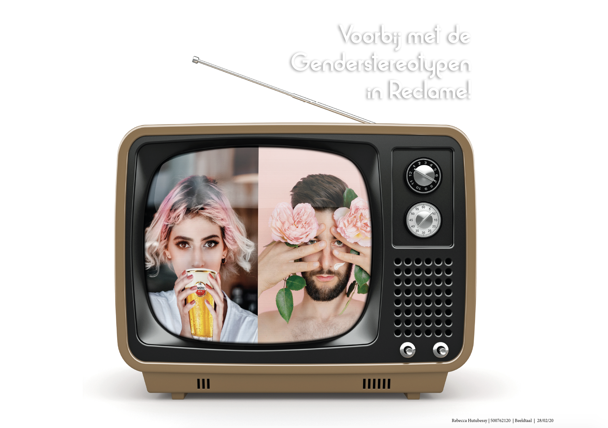

Voor dit vak had ik de artikel : uitgekozen. Ik vond dit een erg interessant onderwerp omdat ik ook vind dat dit moet stoppen in reclame. Ik ging eerst veel beelden opzoeken van reclames en mannen en vrouwen om inspiratie op te doen.
Daarna heb ik in photoshop dit beeld gemaakt.
Je ziet hier dat een meisje een biertje drinkt en er stoer uitziet. De man die heeft een bloem vast en er zit een veeg van creme op zijn gezicht. Dit weergeeft het beeld dat vrouwen ook gewoon bier drinken en mannen ook denken aan huidverzorging. En dat hier niks mis mee is. Ik heb ervoor gekozen om dit beeld naast elkaar te zetten om zo de vergelijking te zien en dit in een oude tv te stoppen. Ik heb voor een oude tv gekozen omdat ik vind dat dit een ouderwets beeld is van de mensen. Dit hoort niet meer en omdat het om reclames gaat past het wel in de tv.
Volgende keer zou ik meer out of de box willen denken en niet te letterlijk iets maken. Ik had ook meer beeld kunnen gebruiken ipv de twee foto's in een Tv scherm te plaatsen. Dan zou ik meer context eromheen.